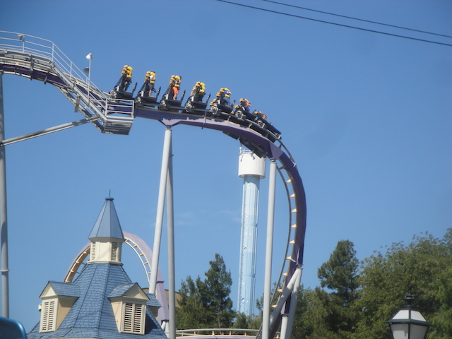
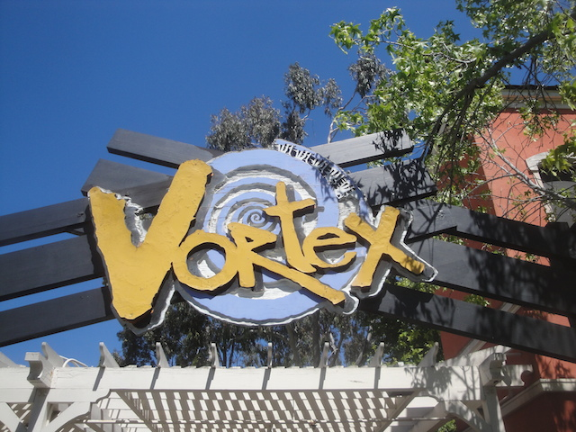
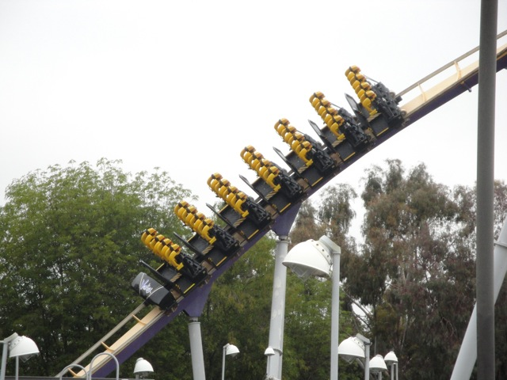
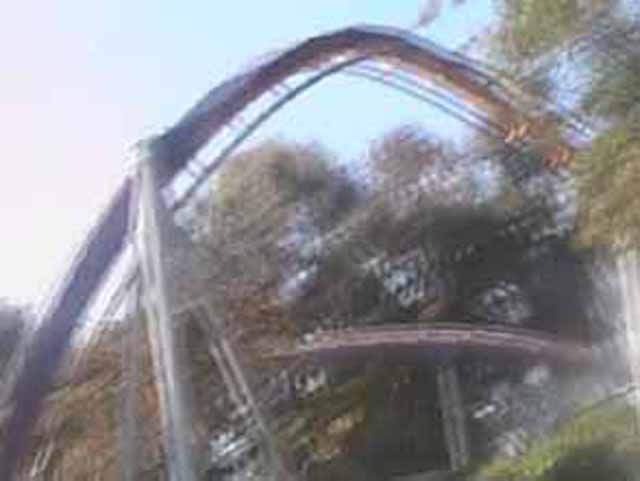
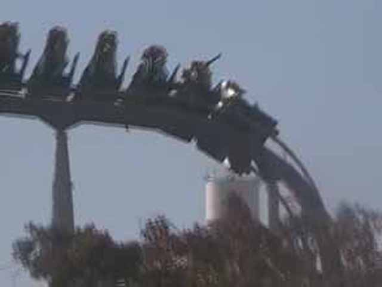
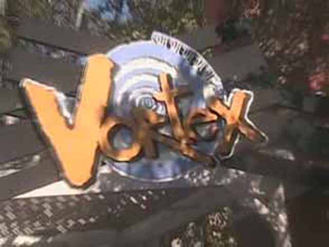

| |
Patriot Review

We're here at California's Great America to ride Patriot. Now this ride used to be a B&M Stand Up coaster called Vortex. It wasn't very good, had some headbanging, and was down at the bottom of the barrel as far as B&Ms went. It wasn't terrible, but you definetly expected a better ride from B&M. However, after Cedar Point successfully transformed Mantis from a B&M Stand Up coaster into a B&M Floorless coaster named Rougarou, it was a huge hit, so they decided to follow suit and turn Vortex into a B&M Floorless coaster named Patriot for 2017. And wouldn't you know, it's a big improvement. You get in the seat, pull down the OTSR, and then we're off! Around the turn we go and into the lifthill we climb. While it's not a very high climb, you still get a good view of the parking lot. Then we reach the top. We dip down the pre drop, tilt to the right and fall down the first drop. We gain a good amount of speed for a small drop. But before anything else can be said, we fly into a vertical loop. One moment, we're head over heels, the next thing, you know, you're back on the ground right side up. Then you curve to the right, then curve to the left where we surge into a turnaround, as we head down again, we twist back to the right. I know there was some headbanging here in those curves when it was Vortex. But for some reason, it's much better as a floorless coaster, After the turnaround, I can only remember turning into this twistyness. It seemed like a spiral helix that led us into another sharp turn. That turn flings us into a corkscrew. Now this corkscrew is awsome. You just tumble right through them. And a quick little warning. If you are wearing sunglasses, they will fly off during this corkscrew. And if you're lucky, the people in the back row will catch them. After that, you just surge into an upward spiral before dropping back down. Then we rise up into a hill where we get a little more airtime. However, it is here that we meet the brake run and realize that our ride is over. While this is without a doubt, my least favorite B&M Floorless Coaster, it still is a fun ride, and definetly an improvement over Vortex, since the ride is definetly much smoother now. I'd recommend riding this if you're at California's Great America. I also recommend putting your sunglasses in your pockets as you might not have someone to catch your sunglasses when they fly off in the corkscrew.
7/10
Location: California's Great America
Vortex opened in 1991
Patriot became a Floorless Coaster in 2017
Built by: B&M
Last Ridden: September 22, 2018
Patriot Photos


Vortex Photos









Home
|